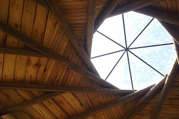

"Usha"
Usha es un Centro de Yoga y Terapias Alternativas.
Su estructura es un heptágono circular de siete metros de diametro con techo recíproco y techo vivo. En la parte superior porta una cupula de cristal. Detalles en sobrerelieves y cañas. Paredes de adobe.(En construcción, Pellegrini, Pcia.Bs.As)

"Casa Matriz"
Es una vivienda de 200m2, con tres habitaciones y entrepiso. Construida sobre un médano, tiene techo vivo y techo recíproco. Paredes de quincha.(En construcción, Toay, Pcia. de La Pampa)

"Almendra"
Construcción de la estructura y techo de una viviensa/salón de yoga, de seis metro de diametro. Heptágono con techo anillo de compresión. (Construido en diciembre de 2021, San Marcos Sierra, Pcia. Cordoba)